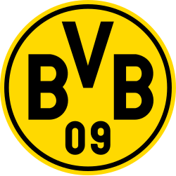

España
FC Barcelona
El FC Barcelona es un club de futbol profesional con sede en Barcelona, España. Fundado en 1899, es uno de los clubes más exitosos y populares del mundo.

Real Madrid
El Real Madrid Club de Fútbol es un club de futbol profesional con sede en Madrid, España. Fundado en 1902, es uno de los clubes más exitosos y reconocidos del mundo.

Atlético de Madrid
El Club Atlético de Madrid es un club de futbol profesional con sede en Madrid, España. Fundado en 1903, es uno de los clubes más importantes y exitosos de España.
Athletic Club
El Athletic Club, conocido como Athletic de Bilbao, es un club de futbol profesional con sede en Bilbao, España. Fundado en 1898, es famoso por su política de cantera y su rica historia en el fútbol español.

Italia
Inter de Milán
El FC Internazionale Milano, comúnmente conocido como Inter de Milán, es un club de futbol profesional con sede en Milán, Italia. Fundado en 1908, ha tenido éxito tanto a nivel nacional como internacional.
Juventus
La Juventus Football Club es un club de futbol profesional con sede en Turín, Italia. Fundado en 1897, es uno de los clubes más exitosos y reconocidos de Italia y Europa.

AC Milan
El AC Milan es un club de futbol profesional con sede en Milán, Italia. Fundado en 1899, es uno de los clubes más exitosos y reconocidos a nivel nacional e internacional.
Inglaterra
Manchester City
El Manchester City Football Club es un club de futbol profesional con sede en Mánchester, Inglaterra. Fundado en 1880, es conocido por su éxito reciente tanto a nivel nacional como internacional.
Liverpool
El Liverpool Football Club es un club de futbol profesional con sede en Liverpool, Inglaterra. Fundado en 1892, es conocido por su rica historia y sus éxitos tanto a nivel nacional como internacional.
Chelsea
El Chelsea Football Club es un club de futbol profesional con sede en Londres, Inglaterra. Fundado en 1905, es conocido por su éxito tanto a nivel nacional como internacional.
Alemania
Bayern Múnich
El FC Bayern Múnich es un club de futbol profesional con sede en Múnich, Alemania. Fundado en 1900, es el club más exitoso en la historia del fútbol alemán.
Borussia Dortmund
El Borussia Dortmund es un club de futbol profesional con sede en Dortmund, Alemania. Fundado en 1909, es conocido por su apasionada afición y su éxito tanto nacional como internacional.
Bayer Leverkusen
El Bayer 04 Leverkusen es un club de futbol profesional con sede en Leverkusen, Alemania. Fundado en 1904, es conocido por su consistencia en la Bundesliga y su participación en competiciones europeas.
Francia
Paris Saint-Germain
El Paris Saint-Germain Football Club es un club de futbol profesional con sede en París, Francia. Fundado en 1970, ha ganado numerosos títulos nacionales e internacionales.

Olympique-Marsella
El Olympique de Marsella es un club de futbol profesional con sede en Marsella, Francia. Fundado en 1899, es uno de los clubes más exitosos y populares del país.
AS Mónaco
El AS Mónaco FC es un club de futbol profesional con sede en Mónaco. Fundado en 1924, ha tenido éxito tanto a nivel nacional como internacional.

Bolivia
The Strongest
El Club The Strongest es un club de futbol profesional con sede en La Paz, Bolivia. Fundado en 1908, es uno de los clubes más exitosos y populares del país.
Club Bolívar
El Club Bolívar es un club de futbol profesional con sede en La Paz, Bolivia. Fundado en 1925, es uno de los clubes más exitosos y reconocidos del país.
Jorge Wilstermann
El Club Jorge Wilstermann es un club de futbol profesional con sede en Cochabamba, Bolivia. Fundado en 1949, es conocido por su éxito en el fútbol boliviano.